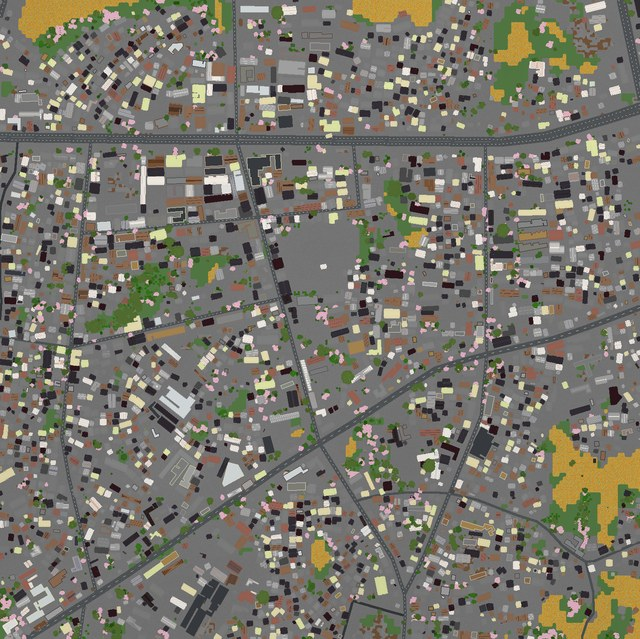

本世界以江西省都昌县第二中学（北纬 29.2786°，东经 116.1998°）为中心，将周边约 1.5km × 1.5km 的县城街区完整复刻进 Minecraft Java 版。生成数据来自 OpenStreetMap 道路网络与 Overture Maps 建筑轮廓，其中该区域 OSM 建筑数据稀缺，世界依靠 Overture 补齐了 3,421 栋建筑；地形高程取自 Mapterhorn 数据集，区域内真实落差约 23.5 米， 与现实中的都昌县城地貌一致。世界为创造模式，周边区域铺设超平坦草原， 便于直接开展建造与参观。
都昌二中校园位于世界中部偏北，范围为 X 646~887 / Z 509~964，东西约 240 格、 南北约 455 格，对应现实中的校园与操场尺度。出生点被设定在校园中心附近， 进入世界后原地环视即可辨认教学楼群与田径场轮廓。县城主要干道（东风大道、万里大道、 县府路等）与次要街巷按真实走向铺设，路网向北衔接新妙湖大道，向南延伸至县城商业区， 可沿道路步行完整游览整个街区。

世界采用 Java 版 Anvil 存档格式，数据版本为 1.21.4，可直接被 1.21.4 及更高版本读取。 整个安装过程无需任何模组或外部工具，五分钟内即可完成。请按以下顺序操作：
1.21.4 及以上版本的配置档案。世界未使用任何数据包与模组，无需额外加载项。DuchangErZhong_MC1.21.4_world.zip 并解压，得到文件夹「都昌二中·Duchang Erzhong (Arnis)」。文件夹内含 level.dat、region/ 等存档文件。Windows
%appdata%\.minecraft\savesmacOS
~/Library/Application Support/minecraft/savesLinux
~/.minecraft/saves(748, -40, 748)；物品栏自带一张已绘制完成的锁定地图，右键举起即可总览整个县城街区。level.dat 直接位于世界文件夹内）；
若提示「世界由不兼容的版本创建」，说明当前游戏版本低于 1.21.4，请先升级再加载。
世界坐标系与地理坐标为线性对应：东经增大对应 X 轴（东）增大，北纬增大对应
Z 轴（南）减小，北为上。下表汇总了区域内 16 处命名地物的方块坐标，
已按出生点标定，与实际位置误差不超过 2 格。旅途中按 F3 打开调试屏可实时查看
当前坐标；也可以用指令 /tp X Y Z 直接传送到表中的任意位置（Y 可取地表附近的 -40）。
X ≈ (经度 − 116.192058) × 97,100
Z ≈ (29.285382 − 纬度) × 111,319
结果四舍五入取整；两式均已含出生点校准偏移。
| 地物名称 | 类型 | MC X | MC Z | 备注 |
|---|---|---|---|---|
| 江西省都昌县第二中学 | 学校 | 748 | 748 | 出生点所在，校园 X 646~887 |
| 都昌县人民政府 | 政府 | 658 | 977 | 县府路南侧 |
| 天宇小学 | 学校 | 968 | 1036 | 县城东南文教区 |
| 天昊商城 | 商场 | 397 | 438 | 县城西北商业区 |
| 东风大道 | 干道 | 1192 | 824 | 贯穿县城的东西主干道 |
| 万里大道 | 主干道 | 1262 | 133 | 北部入城方向 |
| 新妙湖大道 | 次干道 | 1454 | 7 | 东北角，出城方向 |
| 县府路 | 支路 | 652 | 686 | 校园门前道路 |
| 县府北路 | 支路 | 549 | 85 | 县政府以北 |
| 白洋路 | 支路 | 184 | 862 | 县城西侧 |
| 人民路 | 支路 | 410 | 757 | 南北向街巷 |
| 小康路 | 支路 | 516 | 440 | 北部居住区 |
| 芙蓉路 | 支路 | 1139 | 584 | 东部城区 |
| 芙蓉南路 | 支路 | 1044 | 1112 | 南部延伸段 |
| 芙蓉山工业园 | 工业区 | 1483 | 60 | 东北角工业园片区 |
| 都昌县（城市标注） | 标注 | 669 | 1072 | 县城中心参考点 |
世界由开源工具 Arnis v3.2.0（github.com/louis-e/arnis）在命令行模式下生成。 生成范围（bbox）取都昌二中为中心的矩形区域，比例尺设为 1 格 = 1 米，周边环境选择 超平坦草原以获得干净的游览边界。完整命令与各项参数含义如下，可据此复现或调整范围重新生成：
./arnis \ --output-dir <世界输出目录> \ --bbox "29.271910,116.192058,29.285382,116.207529" \ --world-type flat \ --spawn-lat 29.2786462 --spawn-lng 116.1997824 \ --scale 1.0 \ --map-preview
| 参数 | 作用 |
|---|---|
| --bbox | 生成范围（最小纬度,最小经度,最大纬度,最大经度），即都昌县城约 1.5km 见方街区 |
| --scale 1.0 | 世界比例尺：1 方块 = 1 米，建筑与道路按真实尺寸还原 |
| --world-type flat | 生成区域之外铺设超平坦草原，避免「虚空孤岛」观感 |
| --spawn-lat / --spawn-lng | 出生点地理坐标，精确设在学校中心（对应方块 748, 748） |
| --overture（默认开启） | 从 Overture Maps 补齐 OSM 缺失的建筑轮廓，本区域共补入 3,421 栋 |
| --map-preview | 渲染世界俯瞰预览图（即本指南第 1 章插图） |
| --mode geo-terrain（默认） | 真实高程地形 + OSM 地物模式，带来 23.5 米地形起伏 |
数据来源共六类：道路与地物取自 OpenStreetMap 瓦片档案（tiles.arnisproject.com）； 建筑轮廓由 Overture Maps 补齐；地形高程来自 Mapterhorn 全球地形瓦片； 地表覆盖参考 ESA WorldCover 2021；植被冠层高度取自 Meta/WRI 全球冠层数据， 树木种类按「长江平原常绿阔叶林」生态区自动配置了 22 个群落共 497 种区域树木。
本存档为 Java 版格式，手机（Android/iOS）与 Windows 10/11 基岩版无法直接读取，
需要先转换为 .mcworld 格式。推荐两条经过广泛验证的转换路线：
在线工具 Chunker 适合快速转换（免安装、自动处理方块映射），桌面工具
Amulet 适合需要批量或离线操作的用户。转换前请先解压 zip 得到世界文件夹。
chunker.app；② 点击「Upload」上传整个世界文件夹（或将其压缩为 zip 后上传）；
③ 平台选择 Bedrock，目标版本保持默认的最新稳定版；④ 点击「Convert」等待转换完成；
⑤ 下载得到 .mcworld 文件。全程约 1~3 分钟，方块与实体自动映射为基岩版等价物。
amuletmc.com 下载并安装 Amulet；② 打开 Java 世界文件夹；
③ 使用「Convert」功能导出为 Bedrock 世界；④ 将导出文件夹后缀改为 .mcworld（或直接压缩为 zip 后改名）。
Amulet 支持更细粒度的坐标与方块映射选项，适合高级用户。
.mcworld 文件发送到手机或电脑后直接双击（或用「打开方式」选择 Minecraft），
游戏会自动导入并出现在世界列表。导入后出生点、地图与地形保持一致；
个别 Java 版专属方块（如特定告示牌细节）会替换为基岩版近似方块，整体观感不受影响。
--bedrock 参数直接输出 .mcworld），
但重生成不会保留本存档的世界名称与出生点设定，转换现有存档仍是迁移的最稳妥方式。